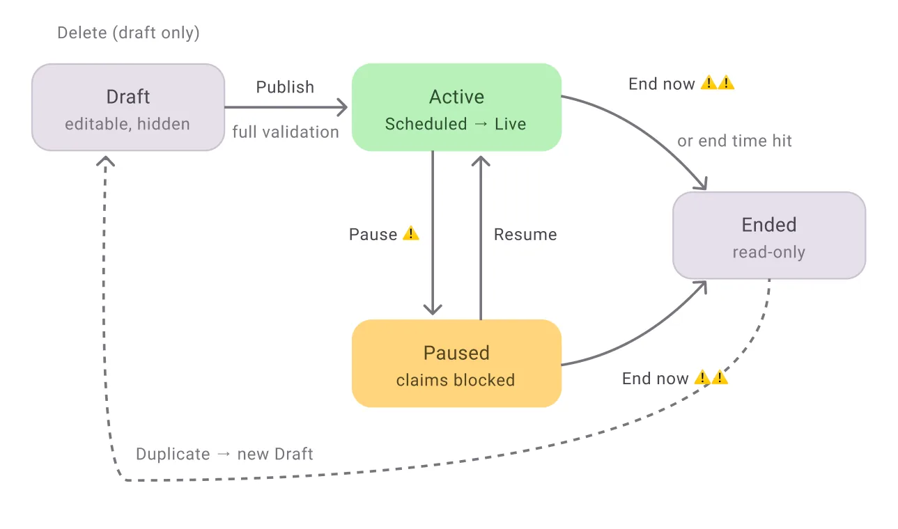
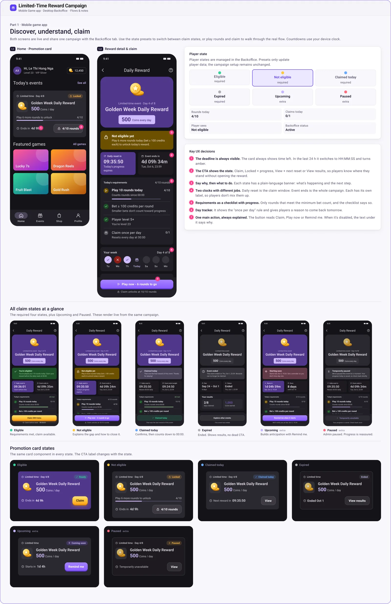
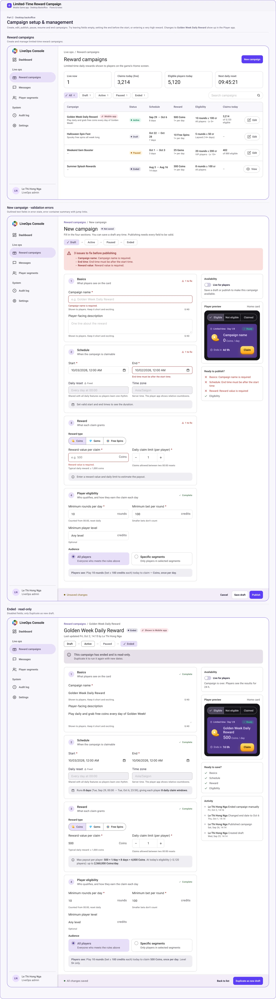
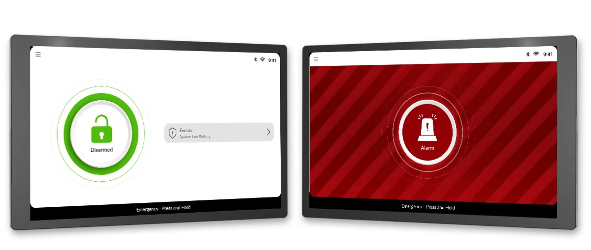

Design systems that hold up in production
I build systems as variants, properties, variables and written rules, then implement them in code. Here is the evidence from four projects.
Principles
Write the rule into the component
Usage guidance lives on the component, so the next designer or developer does not need to ask.
Design every state
Default, loading, error, disabled, armed, alarm. A component is not done until its states are.
One system, every surface
Mobile, desktop, landing page and CMS draw from the same library and tokens.
Limited-Time Reward Campaign: design challenge (2026)
A take-home challenge for a limited-time reward campaign: a mobile game app and a desktop backoffice sharing one component library.

The backoffice is built around this lifecycle. A Draft is editable and hidden. Publishing needs full validation, and then the campaign is Active, first scheduled and then live. Pausing blocks claims. An ended campaign is read-only and can be duplicated into a new draft, and only drafts can be deleted.
Guards scale with the consequence of the action: pausing carries one warning, and ending a campaign carries a stronger, double warning.
Mobile game app: discover, understand, claim
The home screen shows a promotion card, and its detail screen explains the reward and lets the player claim. One card and one screen cover six claim states: eligible, not eligible, claimed today, expired, upcoming and paused. The call to action changes with the state (Claim, a locked button with progress, View, Remind me), and a plain-language banner says what is happening and what to do next.
- The deadline is always visible. The card shows time left and switches to a countdown in the last 24 hours.
- Two clocks with different jobs. The daily reset is the claim window; the event end is the whole campaign. Each has its own label.
- Requirements as a checklist with progress. Players see exactly what is left to unlock the reward.
- One main action, always explained. When the button is disabled, the text under it says why.

Desktop backoffice: campaign setup and management
A LiveOps console where administrators create, edit, publish, pause, resume and end campaigns. The campaign list shows status, schedule, reward, eligibility and claims for each campaign. The new-campaign form has four sections (Basics, Schedule, Reward, Player eligibility), a live preview of the player card and a Ready to publish checklist.
- Errors are easy to find and fix. Invalid input shows a summary at the top with jump links, plus a message on each field.
- The lifecycle is always in view. A status stepper shows Draft, Active, Paused and Ended, and an ended campaign is read-only with a Duplicate as new draft action.
- Changes are traceable. An activity log lists who created, published, changed or ended the campaign, and when.

The library has variants, component properties, color and radius variables, and separate text and effect styles for mobile and backoffice. Usage rules are written into the components, for example which button is the primary action and that a loading state locks the button.
The backoffice protects live campaigns with guards. Changes apply from the next daily reset or immediately, pausing needs a reason saved to an audit log, and ending a campaign requires typing its name. A discard warning protects unsaved edits.
Lighthouse: one interface in three themes
The same layout and components work in light, dark and night modes, so ship operators keep the interface they know in every operating condition.


Smart Security: states you cannot mistake
Disarmed and alarm are distinct at a glance: a green unlocked state on a white screen, and a red alarm state with a striped background. I also built Lottie animations for state feedback.

Poscura: one library across mobile, desktop and CMS
Components and patterns created and maintained in Figma keep the apps, the landing page and the CMS consistent.


From design to code
I translate approved designs into reusable front-end components in HTML, SCSS, Bootstrap, Vue, React and TypeScript, for Merchant Site, MYTHACO and Fit4Stream. That is where a system proves itself: the same decisions, built.